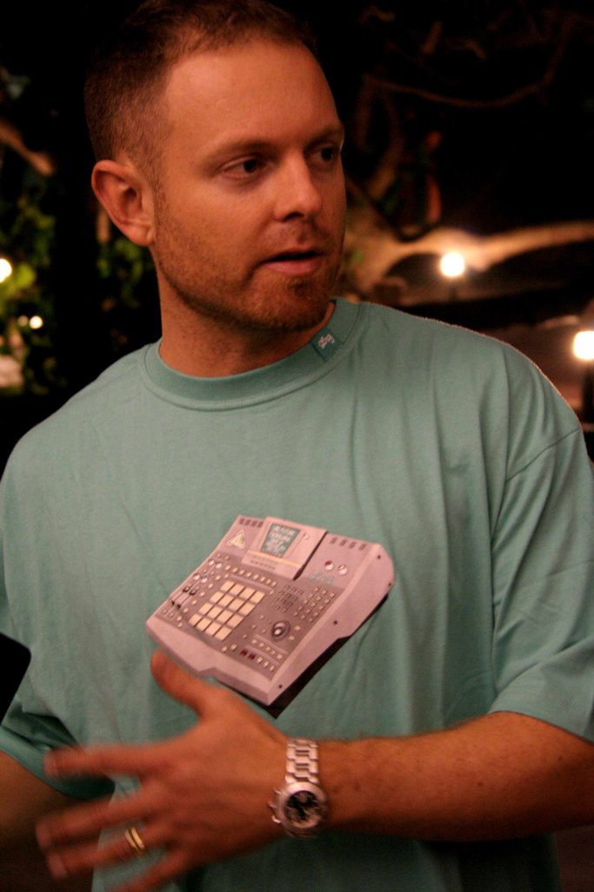

DJ Shadow & Cut Chemist bring the ‘Hard Sell’ to Brisbane, Perth & Canberra!



If one massive does of ‘The Shadow’ last year at the We Love Sounds festival wasn’t enough then you’re in luck, you’ll only have to wait until April to witness the DJ Shadow audio-visual spectacular again and better yet, this time he’ll have Cut Chemist in tow… And if you were afraid that you were going to miss out on the ‘Hard Sell’ experience, then fear no more because they’ll be bringing the party to Brisbane, Perth and Canberra.
The tour will be in support of the new Hard Sell CD, that which was the result of a massive gig that Cut Chemist and DJ Shadow played together at the legendary Hollywood Bowl last year – the 16,500 capacity site has hosted infamous concerts from the likes of The Beatles and The Doors, and the boys were the first ever turntablists that were asked to play a headline show. And the Hard Sell is a recording of the rehearsals for the massive gig: an eclectic mix of funk, hip hop, rock and a whole bunch more that utilises 8 turntables and 2 loop pedals, pushing the possibilities of what can be done with live turtablism.
It’ll no doubt prove amazing to see the results of them hitting the stage together. Here’s the full list of national dates where you can catch the dynamic duo…
18th April – Perth, Metro City
19th April – Sydney, The Big Top – Luna Park
20th April – Brisbane, Brisbane Powerhouse.
24th April – Melbourne, Palace Theatre
23rd April – Canberra, University of Canberra Refectory